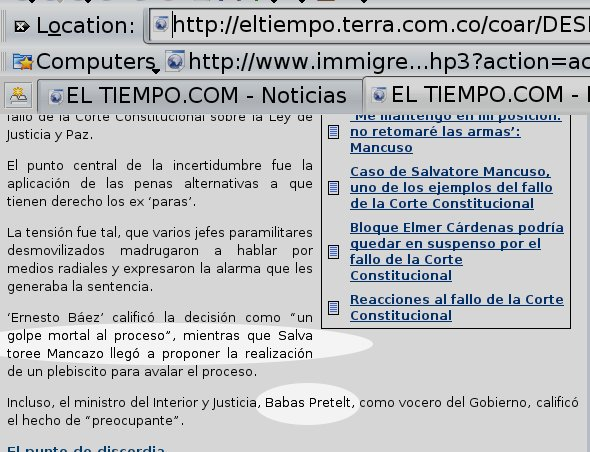
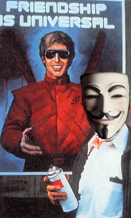

about me
 Software:
Software:
Torta
Karmack
Plata
FUmanchu!
Rants:
AboutMe
Blogging
El origen del hombre americano
Propositos2006
Propositos2007
SWFing
Pictures:
Sicilia -
thumbs
Visita Dimo 2007 -
thumbs
Tokyo -
thumbs
Barcelona -
thumbs
Lisbon -
thumbs
Gilberto Gil -
thumbs
Visita Fidel -
thumbs
Hiver -
thumbs
Dogs -
thumbs
Italy -
thumbs
Eurockeennes -
thumbs
Grenoble -
thumbs
Chipie -
thumbs
Place aux Herbes -
thumbs
Eek Friends:
 Alejo Alejo
Javier
Nelson
Old Posts:
Archive
Created with:
emacs
bash
libXSLT


 Dimo's Art
Quebec Hispano
Dimo's Art
Quebec Hispano
|
|
2006 - May |
Estas son mis predicciones para los próximos cuatro años en Colombia:
- La economía se seguira portando como lo ha hecho durante los últimos años, es decir, al ritmo del resto de la economía latinoamericana
- No se acabará la guerrilla. Ni siquiera será significativamente reducida. El narcotrafico si que menos!
- Tirofijo si desaparecerá del panorama. Nuevos y cada vez más siniestros lideres de la guerrilla, al peor estilo Romaña, irán apareciendo
- No clasificaremos al mundial
- Peñalosa sera el candidato heredero del uribismo. Vencera a Lucho Garzon, pero en segunda vuelta. No contará con una coalición de barones electorales, como Uribe, ya que estos apoyaran algún otro. Por ejemplo a Juan Manuel Santos, que en una nueva voltereta montará un "nuevo" partido liberal
- Los visionarios no serán más que un recuerdo curioso del pasado. Sus votos pasarán a Peñalosa
- Se formarán tenebrosas bandas de las cenizas de los grupos paramilitares. Dejarán miles de muertos, pero el país "no se dará cuenta" antes del 2015, cuando salga un reportaje en Semana al respecto
- Un desastre natural destruirá una ciudad de pequeño tamaño. Uribe pedirá a los ciudadanos rezar por las victimas de la patria
- Juanes ganará otro premio grammy latino
|
|
|
Una noticia mas de esas que ya no asombran a nadie desde Iraq: un grupo de marines asesinan a sangre fría a 15 civiles. Y todavía hay algunos a los que se les hace agua la boca pensando en una intervencion gringa en Colombia.
En otras noticias, haciendo eco al último post de fidel, dejo aquí el link a la entrevista de Carlos Gaviria en La W. Las respuestas que da me parecieron muy inteligentes, la recomiendo.
|
|
|

Snapshot tomado de esta noticia, hoy sábado, en la mañana. Babas Pretelt? Salva Toree Mancazo? Será posible que esos cómicos cambios sean un simple error? Un lapsus? Lo corregiran? Se metieron los hackers a El Tiempo? :P
|
|
|
Creo que seria algo positivo para Colombia que Carlos Gaviria pasara a la segunda vuelta electoral, para propiciar el debate con el actual gobierno. Me parece que de todos los candidatos de oposicion, Carlos Gaviria es el mas apto para conducir una critica del presidente Alvaro Uribe. Los que esten de acuerdo con las criticias que hace Carlos Gaviria del gobierno actual, deberian pasarse por la plaza de Bolivar el domingo proximo.
|
|
|
Anarchism is no patent solution for all human problems, no Utopia of a perfect social order, as it has so often been called, since on principle it rejects all absolute schemes and concepts. It does not believe in any absolute truth, or in definite final goals for human development, but in an unlimited perfectibility of social arrangements and human living conditions, which are always straining after higher forms of expression, and to which for this reason one can assign no definite terminus nor set any fixed goal
|
|
|
|
Arrancó equinoXio con paso duro. Si lo que sigue es como la entrevista a Carlos Gaviria que publicaron, no me queda duda que el sitio tiene mucho futuro. Dicho sea de paso, personalmente encuentro que Marsares es de lo mejor de la blogosfera de opinion política colombiana. Ojala que la calidad de sus escritos se refleje también en la política editorial de este proyecto.
|
|
|
Interesante este artículo. Extractos:
Colombia, primera en Latinoamérica en gasto militar.
El conflicto interno hace que Colombia sea una de las naciones del mundo que más dinero destina al gasto militar. En América Latina ocupa el primer lugar y en el planeta solo es superada por los países de Oriente Medio.
En 2004, 4,3 por ciento del PIB se fue al gasto en defensa y se prevé que esta cifra seguirá creciendo, pues en 1995 era de 2,6 por ciento.
Además, en Colombia los militares son el 1,5 por ciento de toda la fuerza laboral del país, mientras que en América Latina son el 0,8 por ciento.
Afortunadamente, según nuestro presidente, en Colombia no hay conflicto armado...
Con respecto a la educación:
Los esfuerzos del país por ampliar la cobertura en educación primaria, se evidencian en un mayor gasto en esta etapa de la formación de los niños. Por cada estudiante el Gobierno gasta 16,7 por ciento del PIB per cápita (que a 2004 estaba calculado en 2.020 dólares). Esta cifra es superior al promedio de América Latina, cuyo gasto es de 12,3 por ciento, así como al promedio mundial, que es de 15,2 por ciento.
Sin embargo, en los otros niveles de educación y específicamente en el universitario el esfuerzo del país es menor. Mientras América Latina destina 29 por ciento de su PIB per cápita a financiar cada estudiante, Colombia gasta el 26,3 por ciento, pero además está cifra viene cayendo, pues en 1991 destinaba 39,9 por ciento.
A esto se suma la poca cantidad de investigadores que tiene el país. En total son 109 por cada millón de habitantes, mientras que en Argentina hay 720, en Costa Rica 368 y en Venezuela 236.
|
|
|
Dentro de las clasificaciones de universidades que salen por ahi de vez en cuando, las universidades franceses tienden siempre ha quedar en muy malos puestos. Personalmente, creo que eso no es ninguna sorpresa para nadie que haya pasado algún tiempo por el sistema de educación superior francés. Me parece que la sociedad francesa es la primera en no tomarse en serio su sistema universitario, por varias razones que intentaré explicar en este post.
La razón más importante es que la gente que cuenta no estudia en las universidades, sino en un sistema de educación superior paralelo, constituido de grandes écoles. Dentro de la jerarquía de grandes écoles, la École Nationale d'Administration (ENA) y la École Polytechnique estan en la cumbre de la pirámide. Por ejemplo, los altos funcionarios del gobierno son casi todos del ENA. Y todo francés sabe (y en general, acepta, me parece) que el papel de un X (como se llama a los graduados de la École Polytechnique) es el de ser jefe. Punto. Un graduado del ENA simplemente no corre el más minimo riesgo de no tener un trabajo muy muy bien remunerado en Francia.
Es casi un sistema de castas perfectamente codificado. Donde trabajo, se percibe claramente (con las responsabilidades que se les dan) entre un graduado de universidad, el ingeniero (de una escuela de ingenieros como el ENSIMAG) y el polytechnicien, a quienes están preparando para ser jefes. Se sabe, por ejemplo, que a la cabeza de la empresa jamas de los jamases llegara un graduado de la universidad (así como tampoco llegará a la presidencia de la republica). Giscard d'Estaing, ex-presidente francés, autor de la fállida constitucion europea, es un ejemplo perfecto de este sistema de elitismo francés: descendiente de la nobleza, Estaing es graduado tanto del ENA como de la Polytechnique.
Por su parte, la universidad ha sido relegada al papel no de dar buena educación a todo el mundo, sino simplemente de dar educación a todo el mundo, a secas. Contrariamente a las grandes écoles, que son muy selectivos, las universidades aceptan a todo el que quiera entrar. La intensidad horaria es muy baja, en mi percepción, comparada a la de universidades colombianas. Según entiendo, es casi imposible "perder el año" en una universidad.
Para no ir mas lejos, luego de las protestas y bloqueos que hubo recientemente, la respuesta de la gran parte de las universidades fue simplemente ignorar que hubo un mes y medio de clases perdidos, y seguir con el programa como si nada!
Un punto interesante es que el hecho de que una gran parte de los profesores de la universidad francesa hagan investigación no parece tener mucha influencia (mi limitada percepción me hace creerlo) en la calidad de los programas de pregrado... pero ese tema da para otro post.
|
|
|
Según esta noticia, unos bomberos en Cali serán sancionados por marchar sin ropa para protestar por las condiciones de trabajo. La mojigatería en Colombia si es cosa seria.
Según el reportaje "el comandante del Cuerpo de Bomberos Voluntarios de Cali, Fernando Álvarez, reconoce que el presupuesto para operar es un problema, lo que no acepta es que sus bomberos se hayan quitado la ropa.", es decir, que los bomberos trabajen sin recursos: ligeramente problematico, pero normal, aceptable. En cambio, que los bomberos salgan sin ropa a la calle para protestar al respecto: intolerable. Lógico.
Honestamente, alguién les hubiera puesto atención a un puñado de bomberos marchando si no se hubiesen quitado la ropa? Seguro que los que se escandalizan nunca han tenido nada por lo que protestar.
|
|
|

A falta de inspiración bloguistica, un poco de photoshop. ... y el que no entienda el chiste no es de mi generación.
|
|
|

 Save this post]
Save this post]